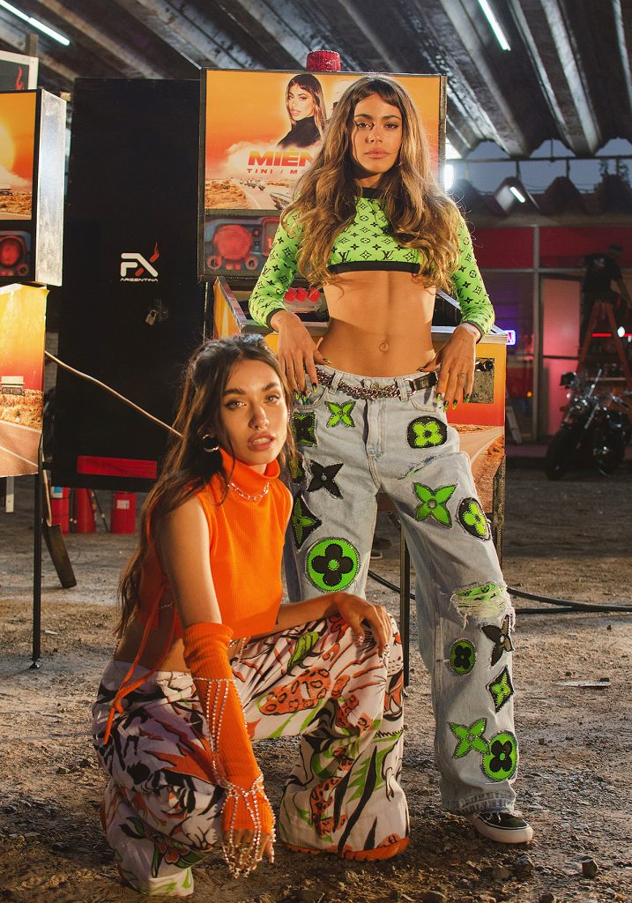

Maria Becerra y sus Mejores Colaboraciones

Qué más Pues?

Colombia y Argentina unen fuerzas. Una canción donde María Becerra y J Balvin fusionan sus estilos consiguiendo una movida colaboración. El carisma que ambos artistas desprenden se hace presente de principio a fin del tema.
La letra del tema evoca a una situación amorosa, que desemboca en una o varias rupturas. “El tema se trata de ese exnovio, exnovia o ex pareja que quiere regresar a ver si le dan una oportunidad, pero que está difícil la situación. Como que ya no, como que ya hubo mucha ida y vuelta, mucha pérdida de tiempo. Así que ya está, lo siento, siguiente” comentaba el artista colombiano.
Link a Qué más pues?Wow Wow

La historia del tema habla acerca de que las chicas no tienen que tener sí o sí a un chico a su lado para pasárselo bien. Es más, cuando ese chico decide marcharse, lejos de resignarse, ellas deciden llamar a todas sus amigas y montar una gran fiesta en la piscina.
Posteriormente organizan una fiesta que desata la locura, aunque el propio videoclip empieza por el final, con todas sus protagonistas cayendo rendidas por el cansancio después de la fiesta. Este es uno de esos temas que te engancha, te será completamente imposible resistirte al Flow y el ritmo tan intenso que María y Becky traen en ‘Wow Wow’
Link a Wow WowMienteme
Sin duda, dos de las mujeres más influyentes en el último año. Tini y María Becerra lanzaron un tema que parecía que pasaría desapercibido pero, no fue así ya que terminó siendo uno de los temas más populares en 2021.
Este proyecto es un fiel reflejo de la complicidad que guardan ambas artistas, el videoclip dirigido por Diego Peskins muestra un claro reflejo de lo bailable que es a su vez la letra del tema, a lo que sumamos la musicalidad y el flow que ambas desprenden.
Link a MientemeTe necesito

Estamos ante uno de los temas más sentimentales de María Becerra, y en esta ocasión junto con un compatriota, además de ser uno de los artistas más reconocidos en el mundo del trap, estamos hablando de Khea.
Este nuevo tema es una balada de trap en la que ambos artistas lanzan un canto a la vida para disfrutar de ella, sin atarnos a los obstáculos y enfrentamientos que podamos tener, porque a veces es demasiado tarde.
Link a Te necesitoAdemás de Mí (Remix)

Rusherking y Thiago sacaron a la luz uno de los remix más apoyados en los últimos años. Entre los récords que ostentan, encontramos 3 discos de platino, a lo que en su momento, sumó más de dos millones de reproducciones del tema en apenas 7 horas.
La participación de María Becerra en este exitoso tema forma una emotiva parte, en ella, la argentina derrocha flow, musicalidad y sentimiento entre muchas otras cualidades enfocadas en un tema al desamor, que tiene un estribillo que une los estilos de todos sus participantes.
Link a Además de Mí